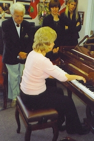

Irina's Photo Gallery
Irina before recital
Students after a successful recital
Adult student program
Irina's performance for students and their parents
Peel Music Festival
Scholarship winner
Happy Moment
History
Spring 2005 Charity Concert, RBC Theatre LAC Mississauga
Irina with her students, Becky on the left is a teacher as well. All participated in concert organized by Becky

Front of theatre after concert
Irina and her students after an enjoyable recital
Irina and Becky piano duet. Wowing the audience.
Canadian National Exhibition ORMTA booth Summer 2005
Posing for picture
Performance for all
Additional Activities
Irina and duet partner Larissa dazzling audience at ORMTA meeting
Playing for mayor Hazel McCallion
Recording at Metal Works 2004
Irina at York University to perform a piece written specially for her by last year Ph. D. student
Irina's involvement in the rehearsal for musical theatre